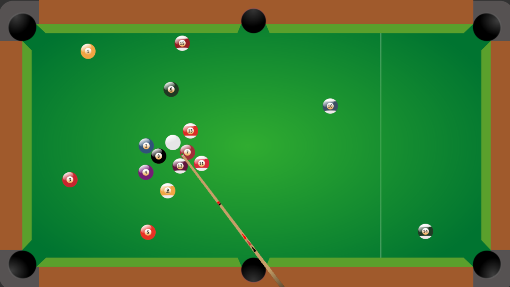
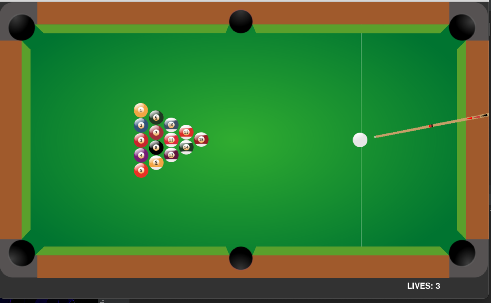

Pool game
This is the link to my github to the project
google docs file link to the full project description
Objective:
The primary objective of this project was to engineer a fully functional 2D Pool Game that exhibits proficiency in Python programming, game development frameworks (Pygame and Pymunk), and mathematical algorithms. The project aimed to demonstrate competency in software design, problem-solving, and creative execution, thereby impressing potential employers in the gaming industry.
Technical Overview:
Python Programming:
- Python served as the foundation of the project due to its versatility, readability, and extensive library ecosystem.
- Utilizing object-oriented programming (OOP) principles, I structured the codebase into modular classes and functions, fostering code reuse, maintainability, and scalability.
Pygame Library:
- Pygame, a Python library renowned for game development, empowered me to create a dynamic and interactive graphical user interface (GUI).
- Leveraging Pygame's functionality for handling user input events, rendering graphics, and managing game states facilitated the seamless implementation of game mechanics and player interactions.
Pymunk Physics Engine:
- Pymunk, a lightweight physics engine tailored for Python, was integrated to simulate realistic physics interactions within the game environment.
- Leveraging Pymunk's robust collision detection and resolution capabilities, I ensured accurate representation of ball trajectories, collision responses, and frictional effects, thereby enhancing the game's realism and immersion.
Mathematical and Geometric Computations:
- Mathematics played a pivotal role in determining ball trajectories, velocities, and angles essential for accurate ball movement and collision detection.
- Employing concepts from vector mathematics, trigonometry, and geometry, I calculated the complex interactions between the balls,walls and ball-pocket collisions.
Design Considerations:
Game Mechanics and Controls:
- I tried my best to emulate real-world physics and rules governing pool gameplay, ensuring authenticity and familiarity for players.
- Intuitive mouse-based controls were implemented to enable players to aim, adjust shot power, and execute shots with precision, fostering a seamless and immersive gaming experience.
User Interface (UI) Design:
Essential game information, including score and shot power, and the game would end once all the balls have been placed in the holes. and if the white ball went into a hole a life would be taken away lives would be displayed at the bottom left of the screen and once they reached zero that is when the game is over.
Conclusion:
The development of the 2D Pool Game using Python, Pygame, and Pymunk libraries represents a testament to the proficiency in software engineering, game development, and mathematical problem-solving. By leveraging these tools and frameworks, the project exemplifies the ability to engineer polished and immersive gaming experiences that captivate players while adhering to industry best practices and standards. this game is more of a proof of concept rather than a fully functional game.
Recommendations for Future Development:
Overall I have learned a lot when making this project, if i was to start from scrach I would definatly use multiple python files as that would really help with readability and would look more proffesional.
I would incorporate oop elements far more as going in I wasnt very confident and was figuring it out as I went along.
I would also attempt to get the game working with the rules of 8 ball pool and I would ideally like to implement an AI opponent that the player can play against.
The game is lacking sound which really takes away from the imersion, so if i would love to try to implement sound as well as a fully functional GUI with a main menu and settings the player can use.
Advanced development
- Explore the integration of additional game modes, challenges, and levels to broaden the game's appeal and replay value.
- Conduct thorough optimization and performance enhancements to ensure smooth gameplay experience across diverse hardware configurations and platforms.
- Investigate the implementation of multiplayer functionality, allowing players to compete or collaborate in real-time, thereby expanding the game's social and competitive dimensions.

